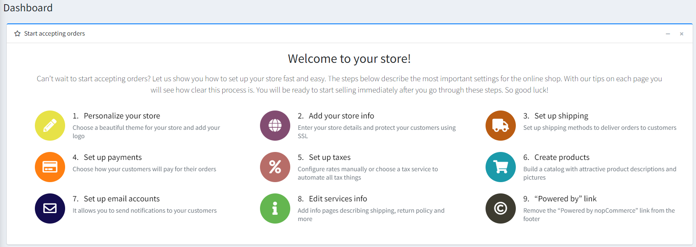
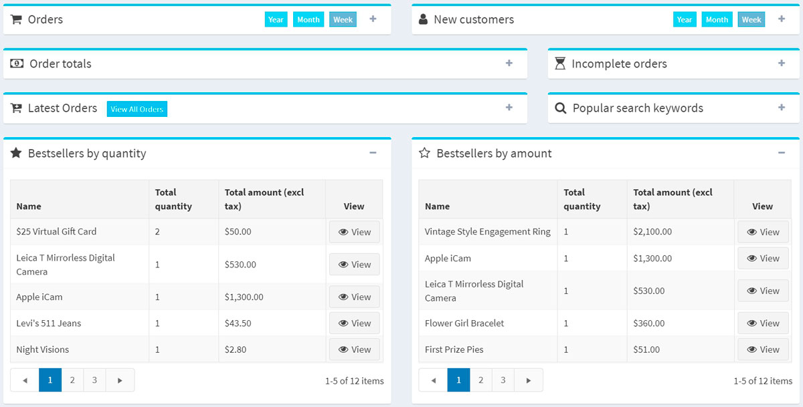
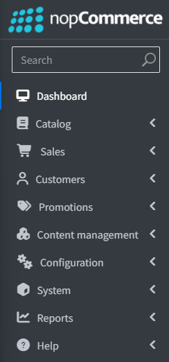
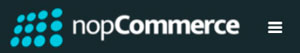
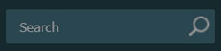
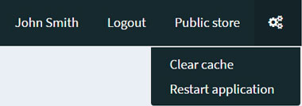
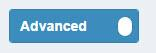
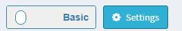
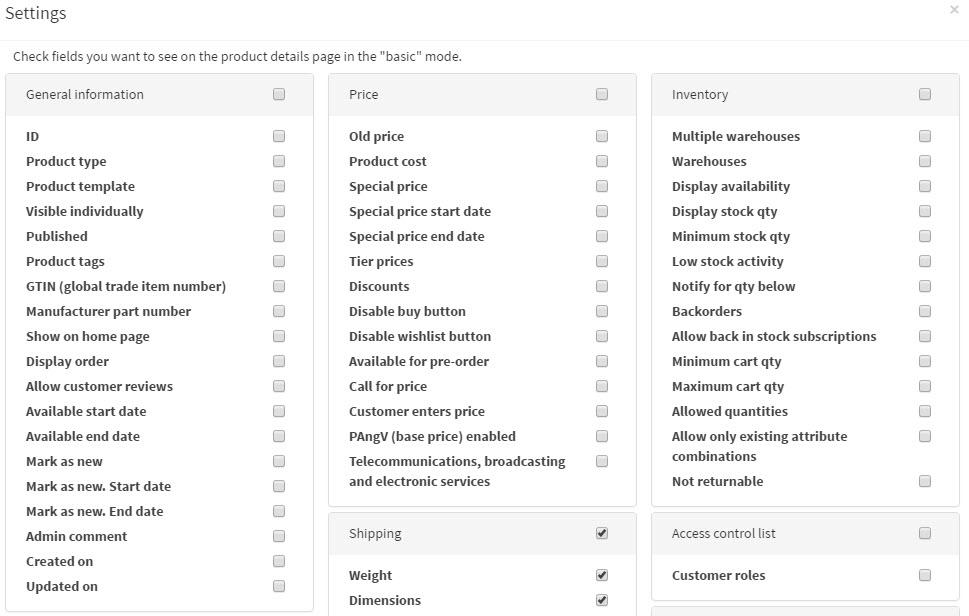

nopCommerce 介面
本章涵蓋 nopCommerce 介面的基礎知識。
登入後，您應該會在網站頂端看到 Administration（管理）超連結。或者，您也可以直接在網站 URL 後面加上 /admin 來開啟管理後台。例如：www.example.com/admin。
登入 nopCommerce 管理後台後，第一個顯示的畫面是 儀表板 (Dashboard)：

儀表板包含以下區塊：
開始接受訂單 (Start accepting orders)：此區塊包含所有與商店設定相關的主要內容頁面。此精靈將會引導您逐步操作管理後台，並說明各項功能的運作方式。
nopCommerce 新聞 (nopCommerce news)：此區塊顯示來自 nopCommerce 的重要新聞、銷售與促銷資訊。
一般統計 (Common statistics)：顯示您網店的統計數據，包括訂單數量、待處理的退貨請求、已註冊的顧客，以及低庫存商品。
顯示網店重要統計數據的其他區塊：訂單 (orders)、新顧客 (new customers)、訂單總額 (order totals)、未完成訂單 (incomplete orders)、最新訂單 (latest orders)、熱門搜尋關鍵字 (popular search keywords)、依數量排行的暢銷商品 (bestsellers by quantity)、依金額排行的暢銷商品 (bestsellers by amount)：

深入了解 這些報告請點此。
儀表板區塊可以透過點擊 圖示輕鬆收合。
常見的 nopCommerce 頁面元素
側邊欄 (Sidebar)

側邊欄位於管理後台每個頁面的左側，讓您能夠瀏覽 nopCommerce 管理員的功能。
您可以透過點擊標誌旁邊的「漢堡」圖示來輕鬆收合側邊欄

。搜尋欄位 (Search field)

在側邊欄的最上方有一個搜尋欄位。開始輸入您想要前往的區塊名稱，搜尋列會自動建議選項，並直接將您導向所需的頁面。
系統選單 (System menu)

介面的這個部分顯示目前登入的使用者名稱、登出按鈕、前台網站連結，以及一個小選單，使用者可從中選擇清除快取或重新啟動應用程式。
基礎與進階模式
在管理後台的某些頁面上，您會看到以下切換開關：

此 基礎 (Basic) 與 進階 (Advanced) 的雙位置開關，允許您在頁面顯示模式之間切換。
為了方便使用，我們建立了 基礎 模式，其中僅顯示最常用的設定。
如果您在頁面上找不到所需的設定，請切換至 進階 模式以查看所有可用的設定。
在某些頁面上，開關旁邊會有一個 設定 (Settings) 按鈕。您可以透過此按鈕來新增或移除所需的設定，藉此根據您的需求調整基礎模式。

點擊 設定 以查看可用設定的清單。勾選 所需設定 的核取方塊。新增後的設定隨即會顯示在 基礎 模式中。
